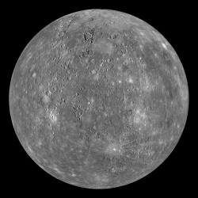
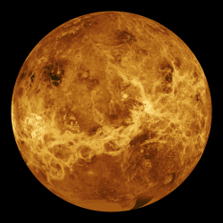
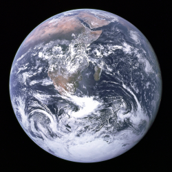
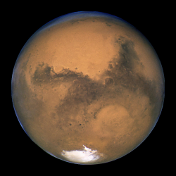
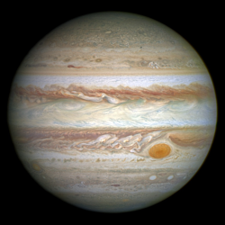
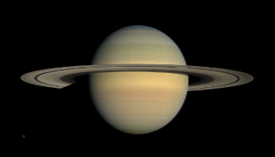
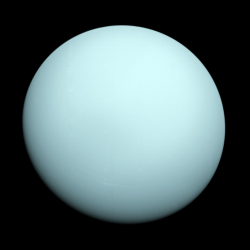
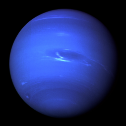

Home
Log In
Planets.com
About
Welcome to Planets.com, in this website, you can find information about
our 8 lovely planets. Each planet page has in depth information about the planet
in a neatly fashioned order and will come with a couple of images for you to
visually see the planet. You can expect to read the size, colours, orbits and
other interesting facts about the planet. This page is also very easy to navigate,
to your left is all the available information in a neat list and will direct
you where you want to go by just a simple click.
Planets
Plants are what we called those big ball objects floating around in space.
Each planet is unique and no of them is exactly the same. In order for
a ball like figure in space to be classified as a planet, it must follow
these basic rules. The object must orbit a star, it is large enough that
its own gravity forms it into a sphere, and has cleared all the objects
in its orbital neighbourhood.
Type of Planets
There are 2 main types of Planets we have in our solar system, rock planets
and gas planets. Rock planets or "terrestrial" planets are the smaller
planets consisting of Mercury, Venus, Earth and Mars. These planets are
small and rocky and are the type of planets that are closet to the sun.
The other type of planet is the gas planets or known as the "Jovian"
planets. Jupiter, Saturn, Uranus and Neptune fall into this category
because they are planets with a lot of gas, hence the name "gas planets".
These gas planets are also surrounded by many bits of ice and small rock
pieces and have many moons.
Planet Moons
Not only are there planets in our solar system, these planets are also
surrounded by many moons. You many already know that Earth has a moon,
but did you know that other planets have moons too? All planets have
different types and sizes of moons, all but Mercury and Venus. Earth
has one moon, and its name is Luna. Mars also has some moons, 2
of them in fact, are their names are Phobos and Deimos. Now we get
to the Jovian planets, which are known to have many moons surrounding
them. These planets may have many moons but most of them aren't even
properly named. Jupiter has 67 moons, Saturn slipping just a little under with
62 moons, Uranus with 27 and finally Neptune with 14.
Why do Planets Exist?
In order to answer this question, it can be easily divided in to 2 other
questions. "How did the Planets form?" and "Why did the Planets form?"
How did Planets form?
All long time ago, about 4.6 billion years ago, there was this spinning
disc call the "Space Nebula" which consisted of many elements such as
hydrogen and helium. When all these elements were spinning, some of the
elements would collide into one and another and clump up to make chucks.
Eventually these chucks go so big that it also started to pull other
elements into it and cause it to form even bigger. These chucks got
big enough that its own gravitational pull started to make the chuck
form into a sphere, making the final product of what we now know as
planets.
Why did Planets form?
Some of the points are already answered in the "How did Planets form?"
question but there is still more. You may know that planets formed
because of the "Space Nebula," but do you know what formed the "Space
Nebula" in the first place? Kind of like how the planets formed, the
same concept applies to the formation of nebulae. Nebulae form by
interstellar medium going through gravitational collapse. Same amounts
of gravitational attraction make the matter in interstellar medium
to attract and clump together, forming regions of greater density.
During this process of gravitational collapse, stars are able to form
in the centre and start to form planets afterwards.
Mercury
Mercury
is the very first planet in our solar system and is also the smallest too.
Being the first planet in our solar system, it also means it is the innermost
planet separating itself from the sun at an average of 57.91 million km and
it take Mercury about 88 Earth days for it to complete its orbit around the
sun. Mercury was named after the Mercury, who was a Roman who sent messages to the
gods and was given the symbol ☿.
Read More

Venus
Venus
is the second planet in our solar system, which is about 108.2 million km
away from the sun, and that's only the second planet! With this much of a distance,
it would take Venus about 224.7 Earth days for it to fully orbit all around the sun.
Venus's symbol is ♀ and it represents the Roman goddess of love and beauty, which was named
to Venus due to its amazing colours.
Read More

Earth
Earth
is the third planet in our solar system and is probably the planet we're most
familiar with because it is the planet we live on. Even though it is the planet we
live on, we might not know as much about it, but no worries, this is what Planets.com is for.
First off, Earth is the only planet in the whole solar system that is able to sustain life on it,
mainly because it has all the sustainable needs for all living things, including water and oxygen.
Earth is 149.6 million km away from the sun and takes 365.25 days for it to complete its full
orbit around the sun. Unlike any of the other planets, Earth was not named after and Greek or Roman
god or goddess, but instead is referred as "the world" by the words of Greek; "Taῖa" and in Latin; "Terra,"
and has the symbol ♁.
Read More

Mars
Mars
is the fourth planet in the solar system and is the most similar
to Earth as it shares similar size and weight. Mars is 227.9 million km away from
the sun, taking 687 days to fully orbit the sun and making it the fourth planet and is the last of the terrestrial planets. Mars
got its name from the Roman god of war, Mars, and often Mars is also referred as the "Red Planet."
The symbol it was given is the ♂ symbol and the arrow at the top right corner represents
the arrow or spear emerging from it as Mars was the god of war.
Read More

Jupiter
Jupiter
is the fifth planet our solar system and is also the first planet
that is classified as Jovian planets in the solar system. It is has a distance of 778.5 million km
from the sun and being for far out, Jupiter takes nearly 12 years to orbit the whole sun! Being such a
huge planet and representing the largest planet, it's no wonder why the Roman people decided to name
it after their most important god, Jupiter and gave it this symbol, ♃.
Read More

Saturn
Saturn
is the sixth planet in the solar system and is most famous for its many
rings surrounding the planet. Saturn separates itself from the sun with an amazing
1.429 billion km of space! This is also the first planet to have a distance of over 1 billion km
However with this incredible distance, poor Saturn will have to wait 29 years until it
orbits 1 full turn around the sun. With the many rings Saturn has, it was named
after the Roman god of agriculture and given the symbol ♄, which represents the
sickle that the Roman god would use.
Read More

Uranus
Uranus
is the seventh planet in the solar system distancing itself from the sun
with 2.877 billion km of space, causing Uranus the long wait of 84 years to complete
one single orbit around the sun. Unlike all of the other planets named after Roman gods or
goddess, Uranus was named after the Greek god of skies, Ouranos or ♅.
Read More

Neptune
Neptune
is the eighth and final planet in our solar system, which is the saved for the best.
Obviously Neptune is the farthest planet from the sun as it is the last, but did you know that
Neptune does so by giving a huge 4.498 billion km of distance! No wonder Neptune has to take
165 years to fully orbit the sun, by then, 3 generations have already gone by here on Earth.
With the dark blue colours that Neptune brightly shows off, it was named after the Roman god of seas
and has the symbol ♆, which represent the god's trident.
Read More

References
Wikipedia, The Free Encyclopedia. (September 13, 2016) Definition of
planet. Retrieved September 20, 2016, from
https://en.wikipedia.org/w/index.php?title=Definition_of_planet&oldid=739287825
nfo. (April 29, 2016) The Planets. Retrieved September 21, 2016,
from http://nfo.edu/astro/planets.htm
Go Astronomy. (April 26, 2016) Moons of the planets.
Retrieved September 21, 2016, from http://www.go-astronomy.com/planets/planet-moons.htm
LCOGT. (October 9, 2015) Planets and How They Formed. Retrieved September 22, 2016, from
https://lcogt.net/spacebook/planets-and-how-they-formed/
Universe Today. (September 10, 2016) NEBULAE: WHAT ARE THEY AND WHERE DO THEY COME FROM?
Retrieved September 23, 2016 from http://www.universetoday.com/61103/what-is-a-nebula/
Citation, Picture Credits
Digital Image: Mercury In Colour,
~https://upload.wikimedia.org/wikipedia/commons/thumb/d/d9/Mercury_in_color_-_Prockter07-edit1.jpg/260px-Mercury_in_color_-_Prockter07-edit1.jpg~
Retrieved September 25, 2016.
Digital Image: Venus,
~https://upload.wikimedia.org/wikipedia/commons/thumb/8/85/Venus_globe.jpg/230px-Venus_globe.jpg~
Retrieved September 25, 2016.
Digital Image: Earth,
~https://upload.wikimedia.org/wikipedia/commons/thumb/9/97/The_Earth_seen_from_Apollo_17.jpg/260px-The_Earth_seen_from_Apollo_17.jpg~
Retrieved September 25, 2016.
Digital Image: Mars,
~https://upload.wikimedia.org/wikipedia/commons/thumb/5/58/Mars_23_aug_2003_hubble.jpg/275px-Mars_23_aug_2003_hubble.jpg~
Retrieved September 25, 2016.
Digital Image: Jupiter,
~https://upload.wikimedia.org/wikipedia/commons/thumb/2/2b/Jupiter_and_its_shrunken_Great_Red_Spot.jpg/260px-Jupiter_and_its_shrunken_Great_Red_Spot.jpg~
Retrieved September 26, 2016.
Digital Image: Saturn,
~https://upload.wikimedia.org/wikipedia/commons/thumb/c/c7/Saturn_during_Equinox.jpg/300px-Saturn_during_Equinox.jpg~
Retrieved September 26, 2016.
Digital Image: Uranus,
~https://upload.wikimedia.org/wikipedia/commons/thumb/3/3d/Uranus2.jpg/260px-Uranus2.jpg~
Retrieved September 26, 2016.
Digital Image: Neptune,
~https://upload.wikimedia.org/wikipedia/commons/5/56/Neptune_Full.jpg~
Retrieved September 26, 2016.